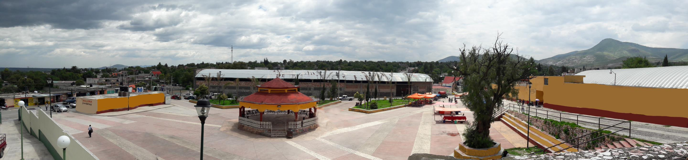

INFORMACION DE LA COMUNIDAD

Santa María Ajoloapan
Santa María Ajoloapan es una población perteneciente al municipio de Hueypoxtla, en el Estado de México, la cual se localiza en las coordenadas GPS:Longitud (dec): -99.044722 y Latitud (dec): 19.976944, a una altura aproximada de 2355 metros sobre el nivel del mar.
Cuenta con 9185 habitantes los cuales son 4570 hombres y 4615 mujeres. La ratio mujeres/hombres es de 1,010, y su índice de fecundidad es de 2.59 hijos por mujer. Del total de la población, el 9,38% proviene de fuera del Estado de México. El 6,65% de la población es analfabeta (el 5,56% de los hombres y el 7,74% de las mujeres). El grado de escolaridad es del 7.15 (7.31 en hombres y 6.99 en mujeres).
La localidad cuenta con escuelas que comprenden desde el nivel precolar hasta el nivel medio superior, entre las cuales se encuentran.
Preescolar.
- Sor Juana Inés de la Cruz.
- San Bartolomé Hueypoxtla.
Escuelas primarías.
- Ignacio Manuel Altamirano.
- Justo Sierra.
- José Tomas Cuellar.
Secundaría.
- Oficial No. 0297 "Tratados de Tenayuca" Turno Matutino y Vespertino.
Media superior.
- Colegio de Bachilleres del Estado de México Plantel 50 (COBAEM).
En su contexto empresarial, “Autobuses Baltazar, S.A. de C.V.” Es una de las empresas más reconocidas en la localidad ya que brinda empleos a una gran cantidad de habitantes en Ajoloapan y poblados vecinos como lo son de San Juan Tianguistongo, Guadalupe Nopala, El Carmen, San Fráncico Zacacalco, entre otros.
Otras empresas ubicadas en el lugar, son las sucursales de empresas como 3B, COMEX, Farmacias Similares, Telcel, entre otras. Sin embargo, la mayor actividad económica que se concentra en el pueblo, son los pequeños comercios como: zapaterías, cafés internet, tiendas y la venta de alimentos en establecimientos como Pizzerías, Hamburgueserías, Pollos a la leña y en penca, Papas, Tacos, tortas y los famosos antojitos mexicanos, así como la agricultura y ganadería en menor escala.
.png)